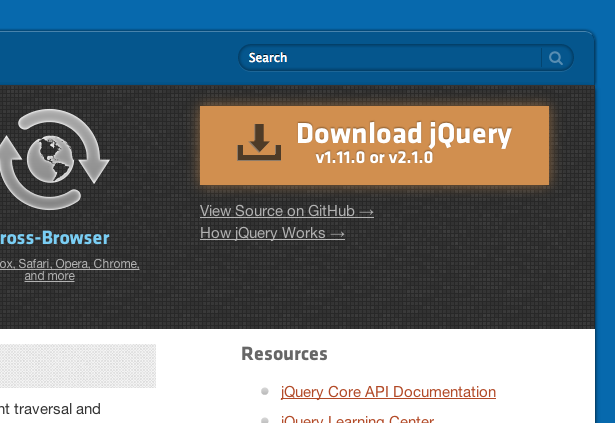
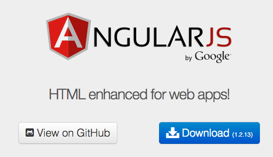
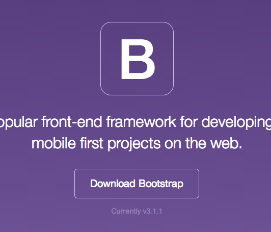
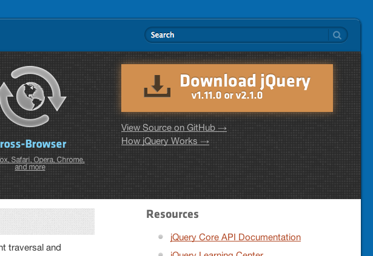
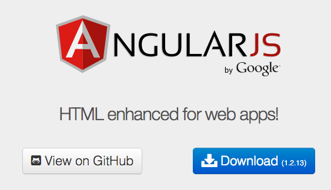
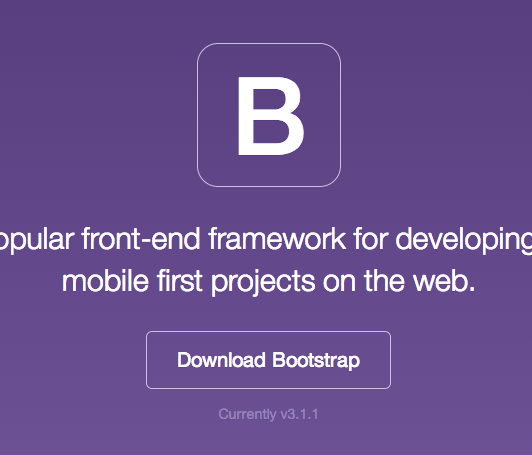
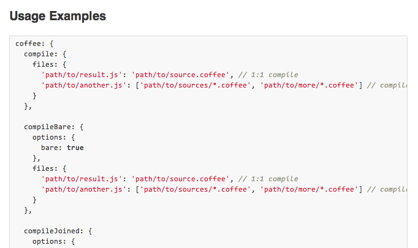

Bower and Grunt
An introduction
 Dependency management tool
specifically for web assets
jQuery, AngularJS, and Bootstrap



<code>mkdir js</code>
<code>mkdir ext/js</code>
Dependency management tool
specifically for web assets
jQuery, AngularJS, and Bootstrap



<code>mkdir js</code>
<code>mkdir ext/js</code>
<head>
<link rel="stylesheet" href="ext/css/bootstrap.min.css" />
<script src="ext/js/jquery-1.10.01.min.js"></script>
<script src="ext/js/angular-1.2.15.min.js"></script>
<script src="ext/js/bootstrap.min.js"></script>
</head>
yay new versions
Stop.
bower install --save jquery
bower install --save angular
bower install --save bootstrap
Command line time!
http://cli.learncodethehardway.org/
<code>which node</code>
<code>npm install -g bower</code>
cd ~/our/project/directory
<code>bower init</code>
<code>bower.json</code>
bower install --save jquery
<code>--save</code>
Save this package's info in bower.json
bower_components/
<head>
<script src="bower_components/jquery/dist/jquery.min.js"></script>
</head>
bower install --save angular
bower install --save bootstrap
<head>
<link rel="stylesheet" href="bower_components/bootstrap/dist/css/bootstrap.min.css" />
<script src="bower_components/jquery/dist/jquery.min.js"></script>
<script src="bower_components/jquery/angular.min.js"></script>
<script src="bower_components/bootstrap/dist/js/bootstrap.min.js"></script>
</head>
yay new versions
bower update
<head>
<link rel="stylesheet" href="bower_components/bootstrap/dist/css/bootstrap.min.css" />
<script src="bower_components/jquery/dist/jquery.min.js"></script>
<script src="bower_components/jquery/angular.min.js"></script>
<script src="bower_components/bootstrap/dist/js/bootstrap.min.js"></script>
</head>
Simple!
Sass Bootstrap?
bower install --save bootstrap-sass
@import('bootstrap');
h1 {
.cats { color: green }
.dogs { color: blue }
}
<head>
<link rel="stylesheet" href="output-css/application.css" />
<script src="bower_components/jquery/dist/jquery.min.js"></script>
<script src="bower_components/jquery/angular.min.js"></script>
<script src="bower_components/bootstrap/dist/js/bootstrap.min.js"></script>
</head>
How to make that CSS file easily?
compass watch
 JavaScript Task Runner
for development & pre-production
Tasks are written in JavaScript
Yeoman
You're going to be looking at one eventually
<code>Gruntfile</code>
JavaScript Task Runner
for development & pre-production
Tasks are written in JavaScript
Yeoman
You're going to be looking at one eventually
<code>Gruntfile</code>
module.exports = function(grunt) {
require('matchdep').filter('grunt-*').forEach(grunt.loadNpmTasks);
grunt.initConfig({
compass: {
dist: {
options: {
config: 'config/compass.rb'
}
}
},
watch: {
compass: {
files: [ 'sass/*.scss' ],
tasks: [ 'compass' ]
}
}
});
grunt.registerTask('default', 'watch:compass')
};
whoa man slow down there's a lot going on there
Line by line
"This is a Gruntfile"
module.exports = function(grunt) {
"Load in tasks from any npm modules that start with grunt-"
require('matchdep').filter('grunt-*').forEach(grunt.loadNpmTasks);
A little trick...
grunt.loadNpmTasks('grunt-contrib-compass');
grunt.loadNpmTasks('grunt-contrib-watch');
(that's what computers are for)
Global npm installation
npm install -g bower
Project-specific npm installation
npm install --save grunt
npm install --save grunt-contrib-compass
npm install --save grunt-contrib-watch
npm install --save matchdep
require('matchdep').filter('grunt-*').forEach(grunt.loadNpmTasks);
(neat)
"Configure the pre-designed tasks..."
grunt.initConfig({
"...like Compass..."
compass: {
dist: {
options: {
config: 'config/compass.rb'
}
}
},
<code>config/compass.rb</code>
sass_dir = "sass"
css_dir = "output-css"
add_import_path "bower_components/bootstrap-sass/lib"
<code>grunt compass:dist</code>
"...and watching file updates..."
watch: {
compass: {
files: [ 'sass/*.scss' ],
tasks: [ 'compass' ]
}
}
<code>grunt watch:compass</code>
"Let's make that the default."
grunt.registerTask('default', 'watch:compass')
<code>grunt</code>
module.exports = function(grunt) {
require('matchdep').filter('grunt-*').forEach(grunt.loadNpmTasks);
grunt.initConfig({
compass: {
dist: {
options: {
config: 'config/compass.rb'
}
}
},
watch: {
compass: {
files: [ 'sass/*.scss' ],
tasks: [ 'compass' ]
}
}
});
grunt.registerTask('default', 'watch:compass')
};
Learning how to read Grunt docs

- grunt-contrib-compass
- grunt-contrib-watch
- grunt-contrib-copy
- grunt-contrib-clean
- grunt-express
- grunt-concurrent
Can't cover all of Grunt tonight
(just a taste)
This presentation uses both Bower and Grunt!
https://github.com/johnbintz/bower-and-grunt-presentation
Thanks!